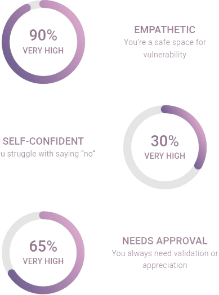

Je pense que c’est vrai que j'apprécie les bonnes relations et je pense que je ne peux pas être contente si j’ai jamais quelqu’un qui est très proche avec moi. Les relations ne sont pas la seule chose qui motive. Je ne fais pas assez pour les personnes pour lesquelles je suis une aide. Ca c’est plus tôt la personne que je veux être et pas qui je suis.Ça me dit que je dois laisser les relations respirer et c'est quoi mon père a dit aussi alors je pense que c’est un peu vrai mais aussi le plus que tu sois avec quelqu'un le meilleur que le relation va devenir.